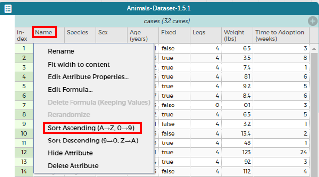
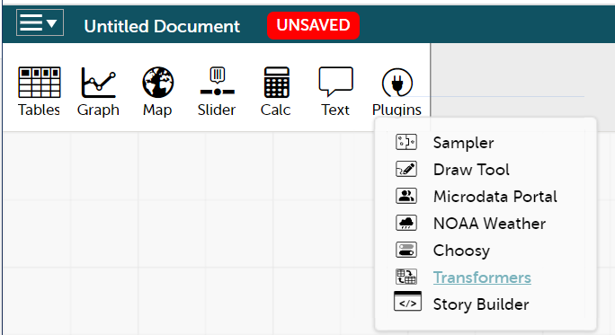
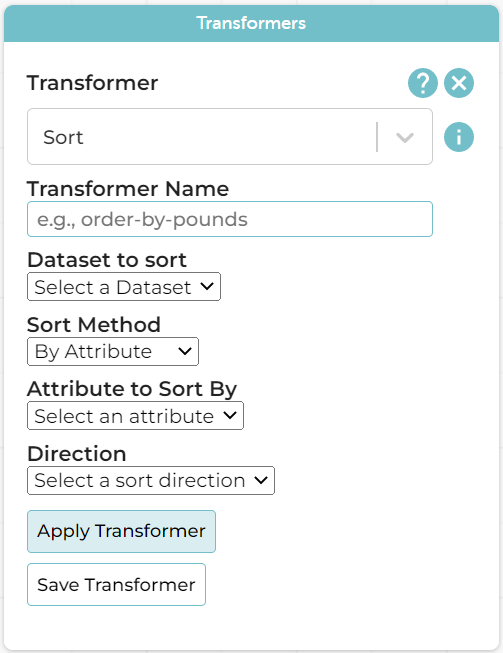

Introduction to Transformers: Sort
Students learn two different ways to sort - by modifying the table, and by using a Transformer to build and modify a copy of the table.
|
Lesson Goals |
Students will be able to…
|
|
Student-facing Lesson Goals |
|
|
Materials |
| Sorting by Changing a Table | 10 minutes |
Overview
Students change a table, sorting it by a particular column.
Launch
Open the Animals Starter File in CODAP. How many animals' names start with the letter M? What would make it easier to figure out how many animals' names start with the letter M?
Investigate
Student work in groups or pairs. You will direct them to sort various columns on the table by clicking the attribute name and then selecting from the drop-down menu either Sort Ascending or Sort Descending.
-
Let’s sort the animals alphabetically by name and see if we get the same answer as we did before! (The image below shows where to click to sort the animals alphabetically by name.)

🖼Show image -
Can you sort the animals by age, from youngest to oldest?
-
How about from heaviest to lightest?
-
Now sort the animals table by how long it took for each animal to be adopted, in ascending order.
{kind=link}
Now, direct students to go to the hamburger menu in the upper left corner and select "Save" from the drop-down menu. Students will be prompted to login to Google and enter their login credentials, linking CODAP with their Google Drive. After saving the sorted table, tell students to close CODAP.
You might even pretend that the online portion of class is over; you’re about to do a bit of performing for students in order to illustrate a point.
Now: dramatically tell students that you forgot something! You REALLY need to know which animal was the third animal on the original table. Direct students to reopen the saved file (they can access it by selecting the hamburger icon again). Tell them they must undo any sorting and then consult the original list.
Students will discover that they in fact cannot undo their actions, thereby uncovering one of the primary limitations of this type of table transformation.
Synthesize
-
Does sorting the Animals Dataset produce a new table, or change the existing one? How do you know?
-
Sorting the dataset alters the existing table. No new tables appear.
-
-
Can you think of another scenario (like the one manufactured, above) when the inability to revert to the original table might cause problems?
-
Whenever we experiment with data, there is a chance we will want to make comparisons to the original dataset.
-
| Sorting with Transformers! | 20 minutes |
Overview
Students use the Sort Transformer to build and modify a copy of the original table.
Launch
When students apply Transformers, they create copies of the original dataset. The original dataset is always preserved - meaning there is no need for students to undo their actions, or to re-open a saved dataset to consider a different configuration. The Transformers plugin enables easy, low-stakes "what if?" exploration that encourages open-ended investigation.
-
Login to the Animals Starter File in CODAP.
-
Access the Transformers plugin.

🖼Show image -
Explore the different Transformers available, especially those categorized under “Construction.”
-
What do you Notice? What do you Wonder?
-
Students might notice the following: there are Transformers for constructing, measuring the center, aggregating, summarizing, restructuring, tidying, and copying; I often need to provide a dataset; sometimes I see contracts; sometimes I am asked to provide formulas.
-
{kind=link}
Investigate
Explain to students that another way to sort is with the Sort Transformer (pictured below), which will create a copy of the Animals dataset in which the animals are organized alphabetically by name.
Complete the Sort Transformer worksheet, which will walk you through creating, applying, and saving a Sort Transformer.

{kind=link}
Initially, students might question the value of using a Transformer to sort. At first, using the Transformer will quite likely feel more laborious than using the sort functionality embedded in CODAP. Encourage students to experiment with all of the functionality that the Transformers offer; invite them to be curious and playful as they work, to consider the possibilities afforded by Transformers. For instance, why might it be useful to name and save a Transformer?
Students might observe that new and modified tables created by Transformers are automatically saved. Each new table is titled first with the Transformer name, then the name of the dataset (in parentheses), followed by a number in curly braces at the end to indicate how many times a Transformer has been applied. Students may rename saved tables, if they’d like. Highlight for students that, each time they apply a saved Transformer, the new datasets that are created will appear in the Transformer’s "Dataset to sort" drop-down menu.
Synthesize
-
Does the Transformer
Sortproduce a new table, or change the existing one?-
The
SortTransformer produceds a new, modified copy of the original table.
-
-
You’ve now learned two different strategies for sorting a column of a table. What do the two strategies have in common? How are they different?
-
Transformers can be named and saved for future use. Transformers create a modified copy of a table rather than altering the original dataset.
-
-
When would it be better to use the
SortTransformer to make a new Table, instead of changing the table? When might it be worse?-
If we are experimenting with a dataset and want to preserve the original table, it would make more sense to use a Transformer.
-
These materials were developed partly through support of the National Science Foundation,
(awards 1042210, 1535276, 1648684, and 1738598).  Bootstrap by the Bootstrap Community is licensed under a Creative Commons 4.0 Unported License. This license does not grant permission to run training or professional development. Offering training or professional development with materials substantially derived from Bootstrap must be approved in writing by a Bootstrap Director. Permissions beyond the scope of this license, such as to run training, may be available by contacting contact@BootstrapWorld.org.
Bootstrap by the Bootstrap Community is licensed under a Creative Commons 4.0 Unported License. This license does not grant permission to run training or professional development. Offering training or professional development with materials substantially derived from Bootstrap must be approved in writing by a Bootstrap Director. Permissions beyond the scope of this license, such as to run training, may be available by contacting contact@BootstrapWorld.org.